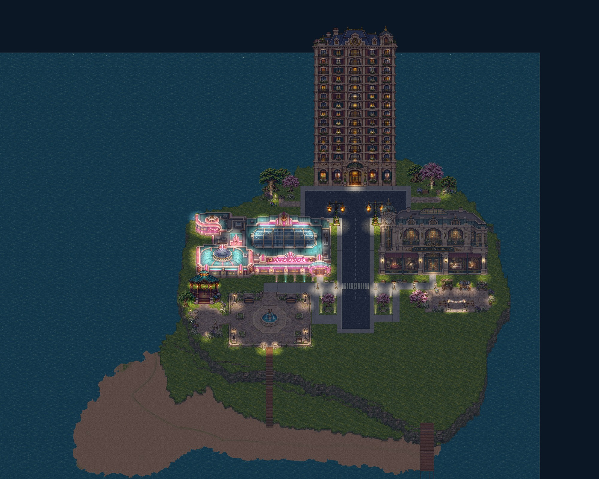
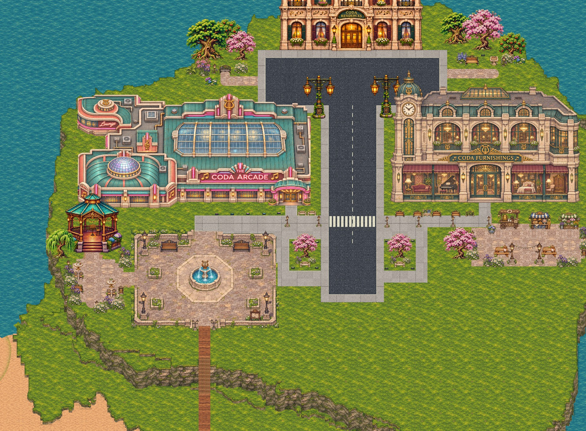
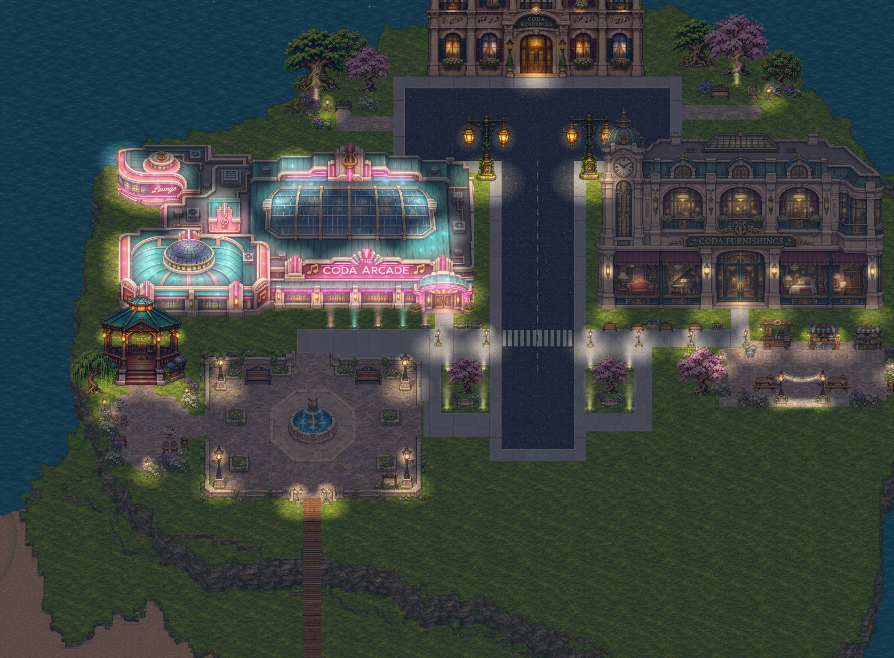

Courtyards
and gardens.
A paved market court beside the furniture store, a shared forecourt around the gazebo, and quiet gardens near the residences. Paths connect the gathering places; seating and planting give each one a clear purpose.
Make it yours
- In Town Builder, use Save project to back up your current map.
- Download the courtyard map above, then choose Open in the builder and select coda-town-courtyards.json.
- Use Select / move to rearrange the decorations. Choose Walk test to explore, or Play this town to visit.
Around the town
Captures from the town renderer. Open any image for a closer look.





Fewer, grouped decorations form places to sit, browse and gather. Each decoration remains independently movable, and the new ground paving can be repainted in the builder. Your original buildings, roads, terrain heights, water and spawn stay in place. The beach and southeast area remain clear for your next ideas.
Use the builder’s City night / Daylight button to compare lighting, and NPCs on / off to choose how busy the town feels while editing.